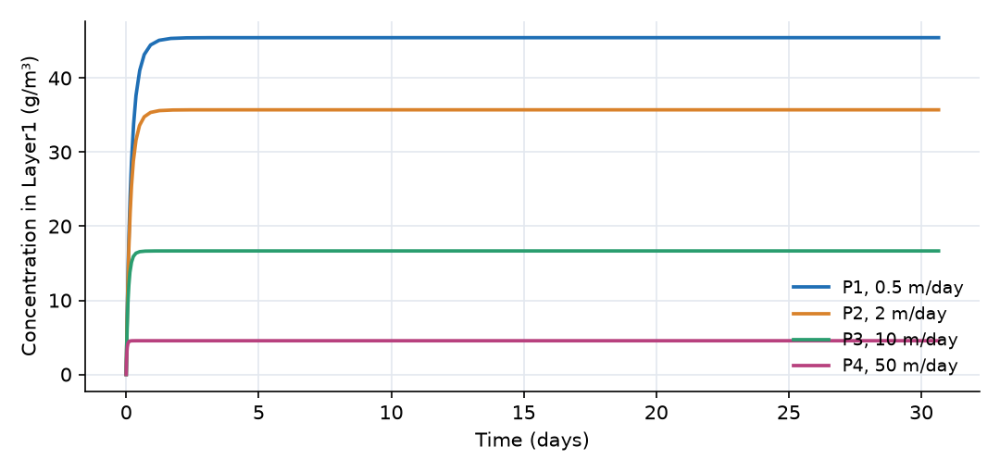
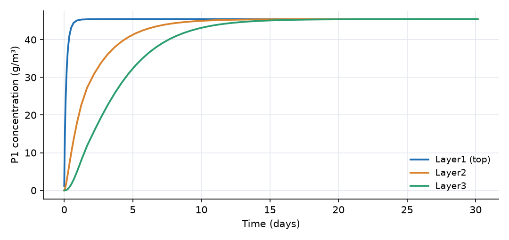
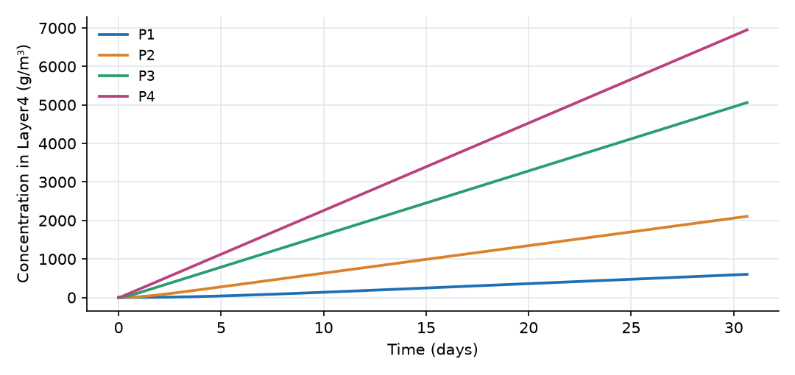

What this model represents
A sedimentation basin (a primary clarifier, a stormwater settling tank or a pretreatment basin) receives a steady flow of water carrying suspended solids. Particles settle at different velocities depending on their size and density, so the basin removes some size classes almost completely and others hardly at all. The overall removal of total suspended solids (TSS) depends on the particle size distribution of the influent, which this model represents with four discrete classes.
The basin is divided into four stacked, fully mixed layers. Water enters and leaves through the top layer; the only downward transport is settling. Because nothing is drawn from the floor, the model reduces to the classic ideal-basin result: the removal of a class depends only on its settling velocity divided by the overflow rate Q/A. This makes the example a good check of the particle and composite machinery. The accompanying PDF guide builds the same model step by step and discusses pitfalls and variations.
How it works
Basin geometry. The Clarifier (4 layers) composite takes the floor elevation (−3 m), the depth (4 m), the plan area A = 400 m² and the total volume (1600 m³). It places the layer bottoms at one quarter of the depth apart (−3, −2, −1 and 0 m), gives each layer a quarter of the volume (400 m³), and assigns the plan area to the three internal interface links. The underflow property sets the downward water flow through the interfaces; here it is 0.
Particle transport across a link. For a Particle constituent, the mass transfer through a link is (from the plugin masstransfer expression)
J = Q·C_upstream + (v_s + v_t)·A_link·[H(z_from − z_to)·C_from − H(z_to − z_from)·C_to]
where Q·C_upstream is advection, v_s is the class's settling velocity, v_t an optional additional trapping velocity (0 here), A_link the link area, z the bottom elevations of the two blocks and H a step function. The settling term only moves particles from the higher block to the lower one. On the three interfaces A_link = 400 m² and Q = 0, so the flux from layer i to layer i+1 is v_s·A·C_i. On the Fixed flow and Effluent flow links the link area is fixed at 10⁻⁹ m², so only advection acts there.
Mass balances. With V = 400 m³ per layer, Q = 2000 m³/day and C_in = 50 g/m³:
V·dC₁/dt = Q·C_in − Q·C₁ − v_s·A·C₁ V·dC₂/dt = v_s·A·(C₁ − C₂) V·dC₃/dt = v_s·A·(C₂ − C₃) V·dC₄/dt = v_s·A·C₃
At steady state the top layer gives
C₁ = C_in / (1 + v_s·A/Q), removal = (v_s·A/Q) / (1 + v_s·A/Q)
and layers 2 and 3 approach C₁. The overflow rate is Q/A = 5 m/day, and the four classes were chosen to straddle it.
| Class | v_s (m/day) | v_s·A/Q | Analytical C₁ (g/m³) | Model C₁ at day 30 (g/m³) | Removal |
|---|---|---|---|---|---|
| P1 | 0.5 | 0.1 | 45.455 | 45.455 | 9.1% |
| P2 | 2 | 0.4 | 35.714 | 35.714 | 28.6% |
| P3 | 10 | 2 | 16.667 | 16.667 | 66.7% |
| P4 | 50 | 10 | 4.545 | 4.545 | 90.9% |
Overall, the effluent carries 102.4 g/m³ of the 200 g/m³ of TSS fed, a removal of 49%.
Because each layer is fully mixed, this result differs from Hazen's ideal plug-flow basin, which removes every particle with v_s ≥ Q/A completely and a fraction v_s/(Q/A) of slower ones. The mixed top layer always lets some of every class escape.
What to look for in the results
- Speed of response. The top layer reaches its steady concentration in about a day for every class; its time constant is V/(Q + v_s·A), between 0.02 day (P4) and 0.18 day (P1).
- Lower layers. Each lower layer exchanges with its neighbours only by settling, with time constant V/(v_s·A) = 1/v_s days for 1 m thick layers. P4 fills Layer3 within 0.2 day, while P1 needs about 14 days to bring Layer3 within 1% of the Layer1 value.
- Accumulation. Layer4 has no outlet, so its concentration rises without limit at v_s·A·C₁/V per day. After 30 days it holds about 5.9 tonnes of solids, an average of 14.6 kg/m³ (about 1.5% solids).
- Mass balance. At steady state, for P3: 2000 × 50 = 100 000 g/day enters, 2000 × 16.67 = 33 333 g/day leaves with the effluent, and the settling flux into Layer4 is 66 667 g/day.
- Reading the output. Effluent quality is the
Sed_Basin__Layer1_<class>:concentrationcolumn. The concentration in theEffluenttank is a running average of everything that has left the basin, which includes the start-up period.
Assumptions and limitations
- Each layer is fully mixed and settling velocities are constant: no flocculation, hindered settling or compaction. The accumulated sludge in Layer4 is not limited by any maximum concentration.
- There is no resuspension and no short-circuiting; inflow and outflow both attach to the top layer.
- The underflow is zero. With a sludge draw (a
Sludge flowlink from the basin andunderflowset to the same rate), Layer4 reaches a steady sludge blanket and the downward water flow adds advection to the settling flux. - Four discrete classes stand in for a continuous settling-velocity distribution; more classes give a finer representation.
- Compared with the PDF guide: the effluent boundary here is a collection tank (a
Reactor), where the guide uses a fixed-head block, and the run starts at day 0.
Model diagram
Hover a block or link to see its name and type. Arrows show the positive flow direction.
Components
Click a component to see every property set in the model file, with units and meaning.
Blocks 2
Storage compartments: each holds water (and dissolved or particulate mass) and has a state that evolves in time.
InfluentReactor · mass_transferA small, well-mixed feed tank (200 m³) that receives 2000 m³/day carrying 50 g/m³ of each particle class (200 g/m³ of total suspended solids) and passes it to the basin. It starts at the influent concentration, so the basin sees a constant feed from the first time step.
Reactor: Reactor
| Property | Value | Unit | Meaning |
|---|---|---|---|
| P1: Concentration | 50 | g/m3 | Computed as mass/(Storage+0.00001) |
| P1: Constant Inflow concentration | 50 | g/m3 | |
| P2: Concentration | 50 | g/m3 | Computed as mass/(Storage+0.00001) |
| P2: Constant Inflow concentration | 50 | g/m3 | |
| P3: Concentration | 50 | g/m3 | Computed as mass/(Storage+0.00001) |
| P3: Constant Inflow concentration | 50 | g/m3 | |
| P4: Concentration | 50 | g/m3 | Computed as mass/(Storage+0.00001) |
| P4: Constant Inflow concentration | 50 | g/m3 | |
| Initial Storage | 200 | m3 | |
| Bottom elevation | 2 | m | |
| Constant Inflow | 2000 | m3/day |
EffluentReactor · mass_transferA tank that collects the clarified water leaving Layer1. It starts with 1 m³ and fills at 2000 m³/day, so its concentration is the average effluent quality since the start, not the current effluent quality.
Reactor: Reactor
| Property | Value | Unit | Meaning |
|---|---|---|---|
| P1: Concentration | 0 | g/m3 | Computed as mass/(Storage+0.00001) |
| P2: Concentration | 0 | g/m3 | Computed as mass/(Storage+0.00001) |
| P3: Concentration | 0 | g/m3 | Computed as mass/(Storage+0.00001) |
| P4: Concentration | 0 | g/m3 | Computed as mass/(Storage+0.00001) |
| Initial Storage | 1 | m3 | |
| Bottom elevation | 0 | m | |
| Constant Inflow | 0 | m3/day |
Composite blocks 1
Pre-assembled groups of blocks and links that behave as a single unit.
Sed_BasinClarifier (4 layers) · wastewaterThe sedimentation basin: a Clarifier (4 layers) composite with 400 m² of plan area and 4 m of depth from a floor at −3 m. It creates four stacked Settling compartment blocks (Layer1 at the top to Layer4 at the floor, 400 m³ each) and three interface links between them. The underflow is 0, so nothing is withdrawn from the bottom and solids accumulate in Layer4.
Clarifier (4 layers) composite with 400 m² of plan area and 4 m of depth from a floor at −3 m. It creates four stacked Settling compartment blocks (Layer1 at the top to Layer4 at the floor, 400 m³ each) and three interface links between them. The underflow is 0, so nothing is withdrawn from the bottom and solids accumulate in Layer4.Clarifier (4 layers): A secondary clarifier / sedimentation basin discretized into four stacked settling layers. Influent attaches to the topmost layer, clarified water leaves it through an 'Effluent flow' link, and return and waste sludge are drawn from the bottom layer through 'Sludge flow' links. The underflow passes downward through all three internal interfaces, so the same flow and interface area are applied to each of them.
| Property | Value | Unit | Meaning |
|---|---|---|---|
| P1: Concentration | 0 | g/m3 | Computed as mass/(Storage+0.00001) |
| P2: Concentration | 0 | g/m3 | Computed as mass/(Storage+0.00001) |
| P3: Concentration | 0 | g/m3 | Computed as mass/(Storage+0.00001) |
| P4: Concentration | 0 | g/m3 | Computed as mass/(Storage+0.00001) |
| Depth of the clarifier | 4 | m | Total depth from the floor to the top of the uppermost layer. Each layer is one quarter of it. |
| Elevation of the clarifier floor | -3 | m | Bottom of the basin, i.e. the bottom of the lowest layer. The three internal interfaces sit automatically at one, two and three quarters of the depth above it, so the individual layer elevations are not entered. |
| Cross-sectional area of the layer interfaces | 400 | m2 | Plan area over which solids settle from each layer into the one below it. The same area is applied to all three interfaces. |
| Initial volume of water in the clarifier | 1600 | m3 | Initial water volume of the whole basin, divided equally between the four layers. |
| Flow drawn downward through the layers | 0 | m3/day | Total underflow, i.e. the sum of the return and waste sludge streams leaving the bottom layer. The same flow is imposed on all three interfaces. |
Links 2
Connections that move water (and the mass it carries) between blocks.
Influent_to_BasinFixed flow · wastewaterFixed flow of 2000 m³/day from the feed tank into Layer1.
Fixed flow: Fixed flow
| Property | Value | Unit | Meaning |
|---|---|---|---|
| Flow rate | 2000 | m3/day | Flow rate |
Basin_to_EffluentEffluent flow · wastewaterEffluent flow of 2000 m³/day from Layer1 to the effluent tank. Equal to the inflow, so the water level in the basin stays constant.
Effluent flow: Effluent flow
| Property | Value | Unit | Meaning |
|---|---|---|---|
| Flow rate | 2000 | m3/day | Flow rate of the clarified effluent. Behaves exactly like a fixed flow; the separate type is what lets a Clarifier draw effluent from its upper compartment while sludge leaves the lower one. |
Constituents 4
Substances or particles carried by the water.
P1ParticleFine particles, settling velocity 0.5 m/day (for example clay flocs).
Particle: Solid Particle
| Property | Value | Unit | Meaning |
|---|---|---|---|
| Concentration | 0 | g/m3 | Computed as mass/(Storage+0.00001) |
| Constant Inflow concentration | 0 | g/m3 | |
| Settling velocity | 0.5 | m/day | |
| Stoichiometric Constant | 0 | ||
| Turbidity Coefficient | 0 | ||
| Turbidity Exponent | 0 |
P2ParticleParticles settling at 2 m/day.
Particle: Solid Particle
| Property | Value | Unit | Meaning |
|---|---|---|---|
| Concentration | 0 | g/m3 | Computed as mass/(Storage+0.00001) |
| Constant Inflow concentration | 0 | g/m3 | |
| Settling velocity | 2 | m/day | |
| Stoichiometric Constant | 0 | ||
| Turbidity Coefficient | 0 | ||
| Turbidity Exponent | 0 |
P3ParticleParticles settling at 10 m/day.
Particle: Solid Particle
| Property | Value | Unit | Meaning |
|---|---|---|---|
| Concentration | 0 | g/m3 | Computed as mass/(Storage+0.00001) |
| Constant Inflow concentration | 0 | g/m3 | |
| Settling velocity | 10 | m/day | |
| Stoichiometric Constant | 0 | ||
| Turbidity Coefficient | 0 | ||
| Turbidity Exponent | 0 |
P4ParticleCoarse particles, settling velocity 50 m/day (for example fine sand or grit).
Particle: Solid Particle
| Property | Value | Unit | Meaning |
|---|---|---|---|
| Concentration | 0 | g/m3 | Computed as mass/(Storage+0.00001) |
| Constant Inflow concentration | 0 | g/m3 | |
| Settling velocity | 50 | m/day | |
| Stoichiometric Constant | 0 | ||
| Turbidity Coefficient | 0 | ||
| Turbidity Exponent | 0 |
Simulation settings
| Start time | 0 |
| End time | 30 |
| Initial time step | 0.01 |
| Write interval (steps) | 5 |
Results
Produced by running the downloaded model unchanged.


